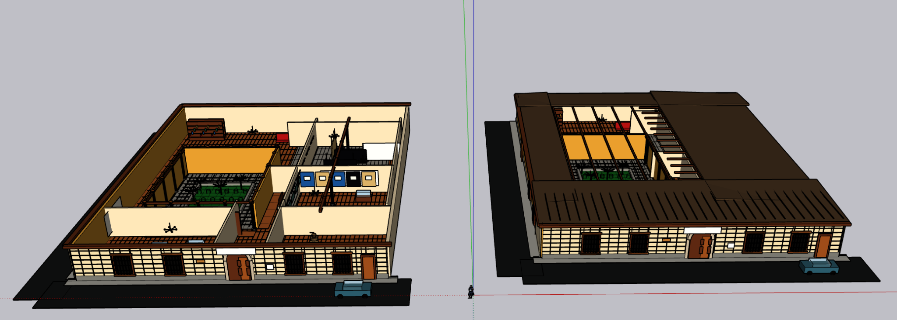
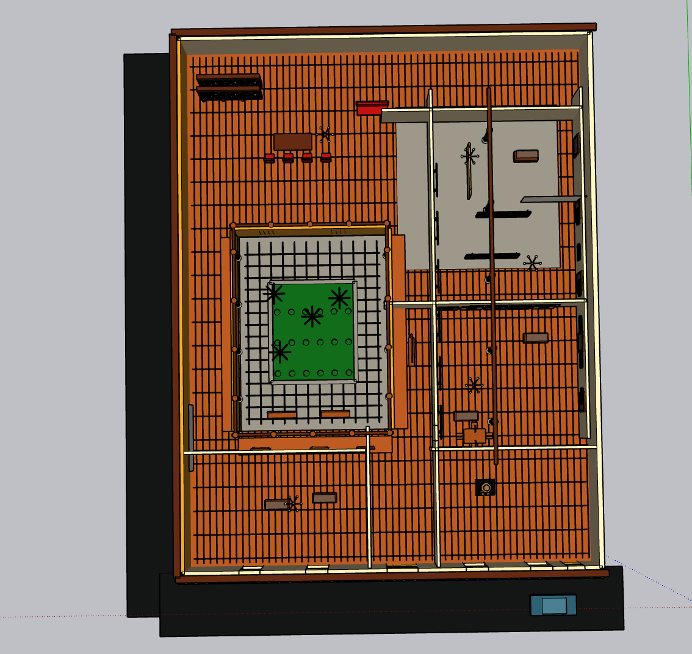
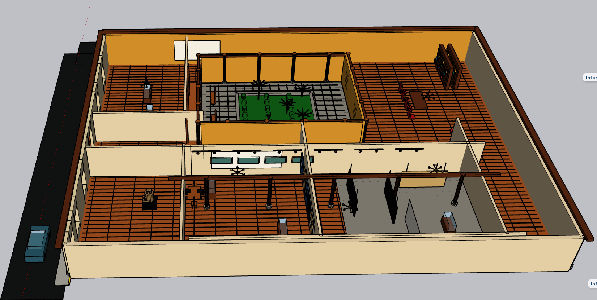
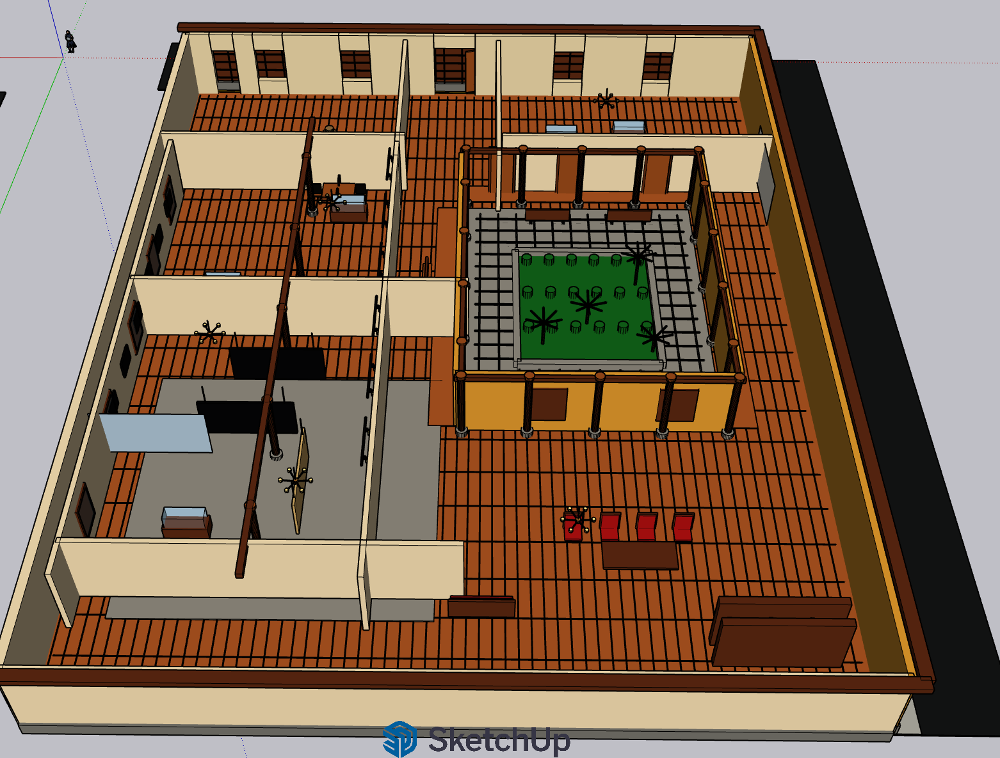
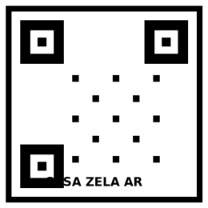

Modelo en SketchUp
Modelo tridimensional completo de la Casa Zela, incluyendo fachada, distribución interior, patio central, muros, texturas, mobiliario y detalles arquitectónicos.
Archivo SKP
El archivo principal editable en SketchUp con el modelo completo de la vivienda.
Abrir modelo .SKPVistas del modelo
Galeria de vistas que muestran la organizacion de ambientes, corredores, patio central y cubierta.




Renderizado V-Ray con Luces
Render fotorrealista que muestra iluminacion natural, sombras proyectadas, cielo, materiales y profundidad visual del proyecto.
{kind=link}
Recorridos Virtuales con V-Ray
Videos renderizados que recorren tanto el exterior como el interior del modelo, destacando la iluminacion, texturas y espacios arquitectonicos.
Recorrido Exterior
Fachada, acceso, cubierta y vista general del volumen arquitectonico.
Recorrido Interior
Patio central, pasadizos, ambientes internos y efecto de luces y sombras.
Realidad Aumentada
Experiencia de realidad aumentada que permite visualizar el modelo 3D de la Casa Zela directamente desde un dispositivo movil usando un marcador.
Video Demostrativo
Simulacion visual del modelo 3D apareciendo sobre un marcador AR.
Visor AR Interactivo
Escanea el código QR desde tu celular o abre el visor para ver el modelo 3D en tu entorno real con realidad aumentada.

Marcador AR{kind=link}
Informe y Documentacion
Documentacion completa del proceso de modelado, incluyendo guia paso a paso, informe academico y video tutorial explicativo.
Guia Paso a Paso
Documento con metodologia, desarrollo, configuracion de luces, camaras, recorrido virtual, RA y publicacion web.
Descargar DOCXInforme PDF
Version del informe lista para entregar o imprimir, con todo el contenido academico del proyecto.
Descargar PDFVideo Guia de Modelado
Tutorial audiovisual que explica paso a paso el proceso de construccion del modelo en SketchUp.